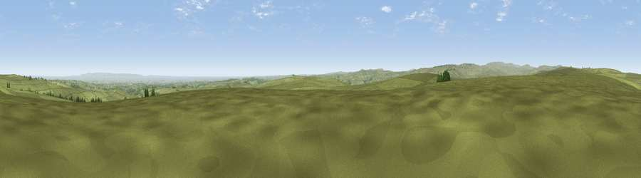

Viewpoint near Wath
#10207 in England · top 13% of its area beats it · near WathThe view, rendered

A 360° render of this exact spot computed from the terrain model, tree cover and land cover — summer colours, afternoon light, calibrated against photographs of famous viewpoints. Real trees, hedges and buildings will differ in detail.
The panorama
Grey silhouette: terrain skyline in each direction (720 bearings, Earth curvature and refraction included). Dashed green: skyline with trees (+15 m) and buildings (+8 m) as obstacles. Blue strip: how far the ground is visible on each bearing.
Where the view opens
Wedge length = distance to the farthest visible ground on that bearing (vegetation-aware). Rings at 10, 25 and 50 km.
What fills the view
86% grassland · 8% cropland · 5% woodland ·
Angular shares of the visible panorama (visual magnitude), not map area. Landscape diversity 0.22 (0–1 Shannon).
Key numbers
More beautiful places nearby
The staircase of upgrades: each row has a higher view potential than everything closer. Driving times are estimates from straight-line distance, calibrated against real road routing — check an actual route before setting out.
| Place | Direction | Drive | Score |
|---|---|---|---|
| Viewpoint near Lofthouse | NNW · 3 km | ~8 min | 65.1 |
| Viewpoint near Lofthouse | NNW · 4 km | ~9 min | 65.8 |
| Viewpoint near Lofthouse | NW · 7 km | ~14 min | 66.1 |
| Viewpoint near Bewerley | SSW · 8 km | ~16 min | 76.8 |
| Viewpoint near East Witton | N · 14 km | ~25 min | 77.8 |
| Viewpoint near Kirby Knowle | ENE · 34 km | ~52 min | 80.5 |
| Viewpoint near Thirlby | ENE · 37 km | ~56 min | 81.5 |
| Beacon Hill | NE · 41 km | ~61 min | 84.7 |
54.13663, -1.75929 · source: screening · position refined by local search. Computed location — check access rights before visiting.